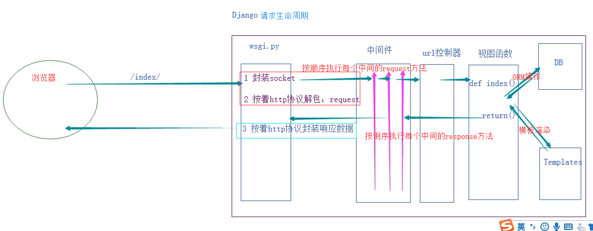
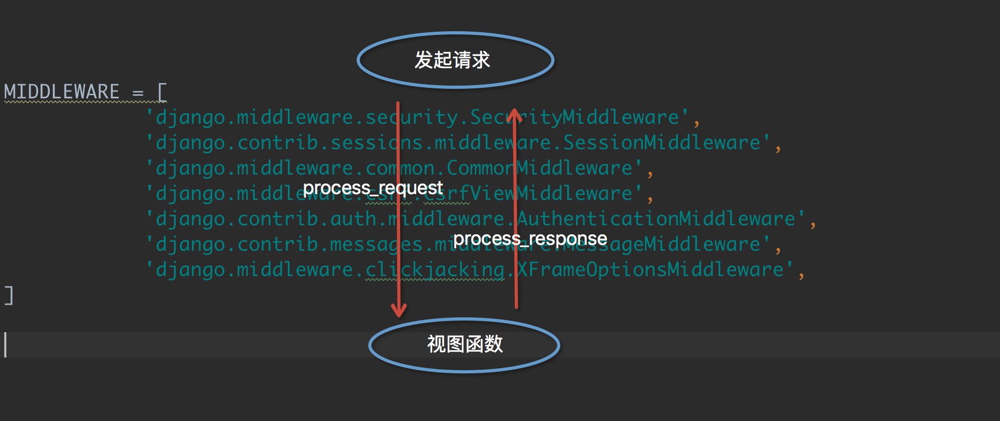
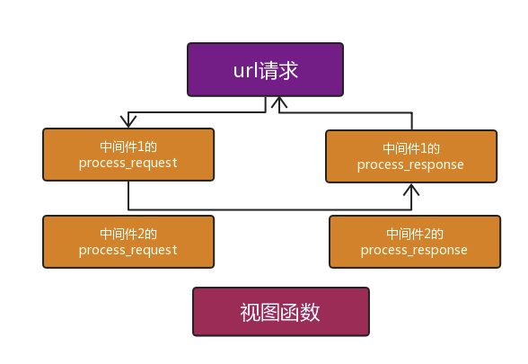
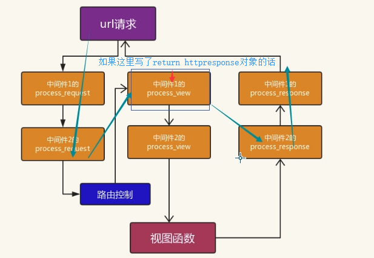
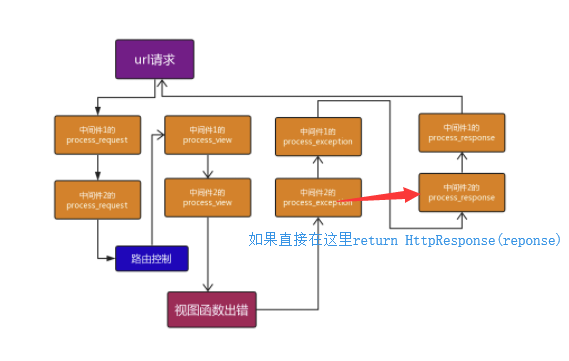
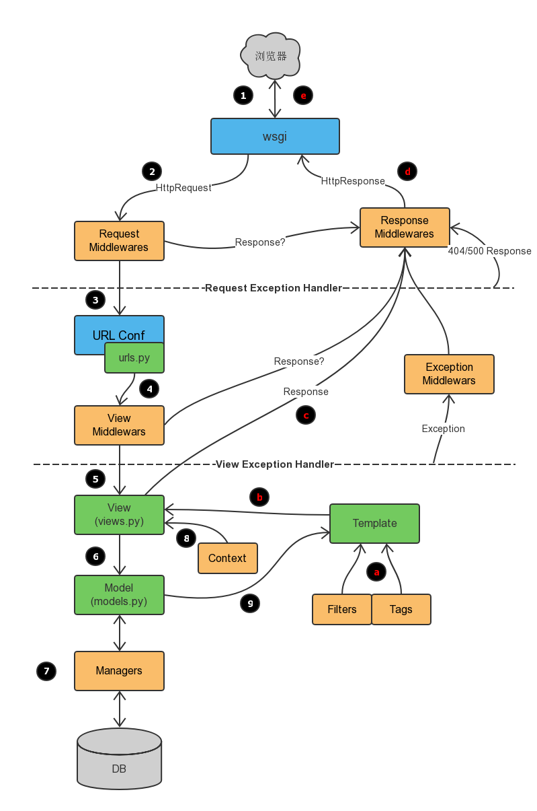

原文连接:https://www.cnblogs.com/changxin7/p/11610813.html
一 前戏
我们在前面的课程中已经学会了给视图函数加装饰器来判断是用户是否登录，把没有登录的用户请求跳转到登录页面。我们通过给几个特定视图函数加装饰器实现了这个需求。但是以后添加的视图函数可能也需要加上装饰器，这样是不是稍微有点繁琐。
学完今天的内容之后呢，我们就可以用更适宜的方式来实现类似给所有请求都做相同操作的功能了
二 中间件介绍
中间件顾名思义，是介于request与response处理之间的一道处理过程，相对比较轻量级，并且在全局上改变django的输入与输出。因为改变的是全局，所以需要谨慎实用，用不好会影响到性能。
Django的中间件的定义：
Middleware is a framework of hooks into Django’s request/response processing. <br>It’s a light, low-level “plugin” system for globally altering Django’s input or output.如果你想修改请求，例如被传送到view中的HttpRequest对象。 或者你想修改view返回的HttpResponse对象，这些都可以通过中间件来实现。
可能你还想在view执行之前做一些操作，这种情况就可以用 middleware来实现。
说的直白一点中间件是帮助我们在视图函数执行之前和执行之后都可以做一些额外的操作，它本质上就是一个自定义类，类中定义了几个方法，Django框架会在请求的特定的时间去执行这些方法。
我们一直都在使用中间件，只是没有注意到而已，打开Django项目的Settings.py文件，看到下面的MIDDLEWARE配置项，django默认自带的一些中间件：
MIDDLEWARE = [
'django.middleware.security.SecurityMiddleware',
'django.contrib.sessions.middleware.SessionMiddleware',
'django.middleware.common.CommonMiddleware',
'django.middleware.csrf.CsrfViewMiddleware',
'django.contrib.auth.middleware.AuthenticationMiddleware',
'django.contrib.messages.middleware.MessageMiddleware',
'django.middleware.clickjacking.XFrameOptionsMiddleware',
]MIDDLEWARE配置项是一个列表，列表中是一个个字符串，这些字符串其实是一个个类，也就是一个个中间件。
我们之前已经接触过一个csrf相关的中间件了？我们一开始让大家把他注释掉，再提交post请求的时候，就不会被forbidden了，后来学会使用csrf_token之后就不再注释这个中间件了。

那接下来就学习中间件中的方法以及这些方法什么时候被执行。
三 自定义中间件
中间件可以定义五个方法，分别是：（主要的是process_request和process_response）
- process_request(self,request)
- process_view(self, request, view_func, view_args, view_kwargs)
- process_template_response(self,request,response)
- process_exception(self, request, exception)
- process_response(self, request, response)
以上方法的返回值可以是None或一个HttpResponse对象，如果是None，则继续按照django定义的规则向后继续执行，如果是HttpResponse对象，则直接将该对象返回给用户。
当用户发起请求的时候会依次经过所有的的中间件，这个时候的请求时process_request,最后到达views的函数中，views函数处理后，在依次穿过中间件，这个时候是process_response,最后返回给请求者。

上述截图中的中间件都是django中的，我们也可以自己定义一个中间件，我们可以自己写一个类，但是必须继承MiddlewareMixin
自定义一个中间件示例
目录：
在项目中创建一个包，随便起名字，一般都放在一个叫做utils的包里面，表示一个公用的组件，创建一个py文件，随便起名字，例如叫做：middlewares.py，内容如下
from django.utils.deprecation import MiddlewareMixin
class MD1(MiddlewareMixin):
#自定义中间件，不是必须要有下面这两个方法，有request方法说明请求来了要处理，有response方法说明响应出去时需要处理，不是非要写这两个方法，如果你没写process_response方法，那么会一层一层的往上找，哪个中间件有process_response方法就将返回对象给哪个中间件
def process_request(self, request):
print("MD1里面的 process_request")
def process_response(self, request, response):
print("MD1里面的 process_response")
return response
process_request
process_request有一个参数，就是request，这个request和视图函数中的request是一样的。
它的返回值可以是None也可以是HttpResponse对象。返回值是None的话，按正常流程继续走，交给下一个中间件处理，如果是HttpResponse对象，Django将不执行视图函数，而将相应对象返回给浏览器。
我们来看看多个中间件时，Django是如何执行其中的process_request方法的。
from django.utils.deprecation import MiddlewareMixin
class MD1(MiddlewareMixin):
def process_request(self, request):
print("MD1里面的 process_request")
class MD2(MiddlewareMixin):
def process_request(self, request):
print("MD2里面的 process_request")
pass在settings.py的MIDDLEWARE配置项中注册上述两个自定义中间件：
MIDDLEWARE = [
'django.middleware.security.SecurityMiddleware',
'django.contrib.sessions.middleware.SessionMiddleware',
'django.middleware.common.CommonMiddleware',
'django.middleware.csrf.CsrfViewMiddleware',
'django.contrib.auth.middleware.AuthenticationMiddleware',
'django.contrib.messages.middleware.MessageMiddleware',
'django.middleware.clickjacking.XFrameOptionsMiddleware',
'middlewares.MD1', # 自定义中间件MD1，这个写的是你项目路径下的一个路径，例如，如果你放在项目下，文件夹名成为utils，那么这里应该写utils.middlewares.MD1
'middlewares.MD2' # 自定义中间件MD2
]此时，我们访问一个视图，会发现终端中打印如下内容：
MD1里面的 process_request
MD2里面的 process_requestapp01 中的 index视图把MD1和MD2的位置调换一下，再访问一个视图，会发现终端中打印的内容如下：
MD2里面的 process_request
MD1里面的 process_requestapp01 中的 index视图看结果我们知道：视图函数还是最后执行的，MD2比MD1先执行自己的process_request方法。
在打印一下两个自定义中间件中process_request方法中的request参数，会发现它们是同一个对象。
由此总结一下：
中间件的process_request方法是在执行视图函数之前执行的。
当配置多个中间件时，会按照MIDDLEWARE中的注册顺序，也就是列表的索引值，从前到后依次执行的。
不同中间件之间传递的request都是同一个对象
多个中间件中的process_response方法是按照MIDDLEWARE中的注册顺序倒序执行的，也就是说第一个中间件的process_request方法首先执行，而它的process_response方法最后执行，最后一个中间件的process_request方法最后一个执行，它的process_response方法是最先执行。
process_response
它有两个参数，一个是request，一个是response，request就是上述例子中一样的对象，response是视图函数返回的HttpResponse对象。该方法的返回值也必须是HttpResponse对象。
给上述的M1和M2加上process_response方法：
from django.utils.deprecation import MiddlewareMixin
class MD1(MiddlewareMixin):
def process_request(self, request):
print("MD1里面的 process_request")
#不必须写return值
def process_response(self, request, response):#request和response两个参数必须有，名字随便取
print("MD1里面的 process_response") #print(response.__dict__['_container'][0].decode('utf-8')) #查看响应体里面的内容的方法，或者直接使用response.content也可以看到响应体里面的内容，由于response是个变量，直接点击看源码是看不到的，你打印type(response)发现是HttpResponse对象，查看这个对象的源码就知道有什么方法可以用了。
return response #必须有返回值，写return response ，这个response就像一个接力棒一样
#return HttpResponse('瞎搞') ,如果你写了这个，那么你视图返回过来的内容就被它给替代了
class MD2(MiddlewareMixin):
def process_request(self, request):
print("MD2里面的 process_request")
pass
def process_response(self, request, response): #request和response两个参数必须要有，名字随便取
print("MD2里面的 process_response")
return response #必须返回response，不然你上层的中间件就没有拿到httpresponse对象，就会报错访问一个视图，看一下终端的输出：
MD2里面的 process_request
MD1里面的 process_request
app01 中的 index视图
MD1里面的 process_response
MD2里面的 process_response看结果可知：
process_response方法是在视图函数之后执行的，并且顺序是MD1比MD2先执行。(此时settings.py中 MD2比MD1先注册)
多个中间件中的process_response方法是按照MIDDLEWARE中的注册顺序倒序执行的，也就是说第一个中间件的process_request方法首先执行，而它的process_response方法最后执行，最后一个中间件的process_request方法最后一个执行，它的process_response方法是最先执行。
再看一个例子：
from django.utils.deprecation import MiddlewareMixin
from django.shortcuts import HttpResponse
class Md1(MiddlewareMixin):
def process_request(self,request):
print("Md1请求") #process_request方法里面不写返回值，默认也是返回None，如果你自己写了return None，也是一样的效果，不会中断你的请求，但是如果你return 的一个httpresponse对象，那么就会在这个方法中断你的请求，直接返回给用户，这就成了非正常的流程了 #并且，如果你在这里return了httpresponse对象，那么会从你这个中间件类中的process_response方法开始执行返回操作，所以这个类里面只要有process_response方法，肯定会执行
def process_response(self,request,response):
print("Md1返回")
return response
class Md2(MiddlewareMixin):
def process_request(self,request):
print("Md2请求")
#return HttpResponse("Md2中断")
def process_response(self,request,response):
print("Md2返回")
return response结果：
Md1请求
Md2请求
view函数...
Md2返回
Md1返回注意：如果当请求到达请求2的时候直接不符合条件返回，即return HttpResponse("Md2中断")，程序将把请求直接发给中间件2返回，然后依次返回到请求者，结果如下：
返回Md2中断的页面，后台打印如下：
Md1请求
Md2请求
Md2返回
Md1返回流程图如下：

之前我们做的cookie认证，都是通过在函数上面加装饰器搞的，比较麻烦，看看中间件怎么搞，如果写的是session认证的，你必须放在django自带的session中间件的下面，所以自定义中间之后，你需要注意你的中间件的摆放顺序。
class M1(MiddlewareMixin):
def process_request(self,request):
#设置路径白名单，只要访问的是login登陆路径，就不做这个cookie认证
if request.path not in [reverse('login'),]:
print('我是M1中间件') #客户端IP地址
# return HttpResponse('sorry,没有通过我的M1中间件')
is_login = request.COOKIES.get('is_login', False)
if is_login:
pass
else:
# return render(request,'login.html')
return redirect(reverse('login'))
else:
return None #别忘了return None，或者直接写个pass
def process_response(self,request,response):
print('M1响应部分')
# print(response.__dict__['_container'][0].decode('utf-8'))
return response
# return HttpResponse('瞎搞')练习：尝试一下通过中间件来控制用户的访问次数，让用户在一分钟之内不能访问我的网站超过20次。
后面要学的方法不常用，但是大家最好也要知道。
process_view
process_view(self, request, view_func, view_args, view_kwargs)
该方法有四个参数
request是HttpRequest对象。
view_func是Django即将使用的视图函数。 （它是实际的函数对象，而不是函数的名称作为字符串。）
view_args是将传递给视图的位置参数的列表.
view_kwargs是将传递给视图的关键字参数的字典。 view_args和view_kwargs都不包含第一个视图参数（request）。
Django会在调用视图函数之前调用process_view方法。
它应该返回None或一个HttpResponse对象。 如果返回None，Django将继续处理这个请求，执行任何其他中间件的process_view方法，然后在执行相应的视图。 如果它返回一个HttpResponse对象，Django不会调用对应的视图函数。 它将执行中间件的process_response方法并将应用到该HttpResponse并返回结果。

给MD1和MD2添加process_view方法:
from django.utils.deprecation import MiddlewareMixin
class MD1(MiddlewareMixin):
def process_request(self, request):
print("MD1里面的 process_request")
def process_response(self, request, response):
print("MD1里面的 process_response")
return response
def process_view(self, request, view_func, view_args, view_kwargs):
print("-" * 80)
print("MD1 中的process_view")
print(view_func, view_func.__name__) #就是url映射到的那个视图函数，也就是说每个中间件的这个process_view已经提前拿到了要执行的那个视图函数 #ret = view_func(request) #提前执行视图函数，不用到了上图的试图函数的位置再执行，如果你视图函数有参数的话，可以这么写 view_func(request,view_args,view_kwargs)
#return ret #直接就在MD1中间件这里这个类的process_response给返回了，就不会去找到视图函数里面的这个函数去执行了。
class MD2(MiddlewareMixin):
def process_request(self, request):
print("MD2里面的 process_request")
pass
def process_response(self, request, response):
print("MD2里面的 process_response")
return response
def process_view(self, request, view_func, view_args, view_kwargs):
print("-" * 80)
print("MD2 中的process_view")
print(view_func, view_func.__name__)访问index视图函数，看一下输出结果：
MD2里面的 process_request
MD1里面的 process_request
--------------------------------------------------------------------------------
MD2 中的process_view
<function index at 0x000001DE68317488> index
--------------------------------------------------------------------------------
MD1 中的process_view
<function index at 0x000001DE68317488> index
app01 中的 index视图
MD1里面的 process_response
MD2里面的 process_responseprocess_view方法是在process_request之后，reprocess_response之前，视图函数之前执行的，执行顺序按照MIDDLEWARE中的注册顺序从前到后顺序执行的

process_exception
process_exception(self, request, exception)
该方法两个参数:
一个HttpRequest对象
一个exception是视图函数异常产生的Exception对象。
这个方法只有在视图函数中出现异常了才执行，它返回的值可以是一个None也可以是一个HttpResponse对象。如果是HttpResponse对象，Django将调用模板和中间件中的process_response方法，并返回给浏览器，否则将默认处理异常。如果返回一个None，则交给下一个中间件的process_exception方法来处理异常。它的执行顺序也是按照中间件注册顺序的倒序执行。

给MD1和MD2添加上这个方法：
from django.utils.deprecation import MiddlewareMixin
class MD1(MiddlewareMixin):
def process_request(self, request):
print("MD1里面的 process_request")
def process_response(self, request, response):
print("MD1里面的 process_response")
return response
def process_view(self, request, view_func, view_args, view_kwargs):
print("-" * 80)
print("MD1 中的process_view")
print(view_func, view_func.__name__)
def process_exception(self, request, exception):
print(exception)
print("MD1 中的process_exception")
class MD2(MiddlewareMixin):
def process_request(self, request):
print("MD2里面的 process_request")
pass
def process_response(self, request, response):
print("MD2里面的 process_response")
return response
def process_view(self, request, view_func, view_args, view_kwargs):
print("-" * 80)
print("MD2 中的process_view")
print(view_func, view_func.__name__)
def process_exception(self, request, exception):
print(exception)
print("MD2 中的process_exception")如果视图函数中无异常，process_exception方法不执行。
想办法，在视图函数中抛出一个异常：
def index(request):
print("app01 中的 index视图")
raise ValueError("呵呵")
return HttpResponse("O98K")在MD1的process_exception中返回一个响应对象：
class MD1(MiddlewareMixin):
def process_request(self, request):
print("MD1里面的 process_request")
def process_response(self, request, response):
print("MD1里面的 process_response")
return response
def process_view(self, request, view_func, view_args, view_kwargs):
print("-" * 80)
print("MD1 中的process_view")
print(view_func, view_func.__name__)
def process_exception(self, request, exception):
print(exception)
print("MD1 中的process_exception")
return HttpResponse(str(exception)) # 返回一个响应对象看输出结果：
MD2里面的 process_request
MD1里面的 process_request
--------------------------------------------------------------------------------
MD2 中的process_view
<function index at 0x0000022C09727488> index
--------------------------------------------------------------------------------
MD1 中的process_view
<function index at 0x0000022C09727488> index
app01 中的 index视图
呵呵
MD1 中的process_exception
MD1里面的 process_response
MD2里面的 process_response
注意，这里并没有执行MD2的process_exception方法，因为MD1中的process_exception方法直接返回了一个响应对象。
process_template_response（用的比较少）
process_template_response(self, request, response)
它的参数，一个HttpRequest对象，response是TemplateResponse对象（由视图函数或者中间件产生）。
process_template_response是在视图函数执行完成后立即执行，但是它有一个前提条件，那就是视图函数返回的对象有一个render()方法（或者表明该对象是一个TemplateResponse对象或等价方法）。
class MD1(MiddlewareMixin):
def process_request(self, request):
print("MD1里面的 process_request")
def process_response(self, request, response):
print("MD1里面的 process_response")
return response
def process_view(self, request, view_func, view_args, view_kwargs):
print("-" * 80)
print("MD1 中的process_view")
print(view_func, view_func.__name__)
def process_exception(self, request, exception):
print(exception)
print("MD1 中的process_exception")
return HttpResponse(str(exception))
def process_template_response(self, request, response):
print("MD1 中的process_template_response")
return response
class MD2(MiddlewareMixin):
def process_request(self, request):
print("MD2里面的 process_request")
pass
def process_response(self, request, response):
print("MD2里面的 process_response")
return response
def process_view(self, request, view_func, view_args, view_kwargs):
print("-" * 80)
print("MD2 中的process_view")
print(view_func, view_func.__name__)
def process_exception(self, request, exception):
print(exception)
print("MD2 中的process_exception")
def process_template_response(self, request, response):
print("MD2 中的process_template_response")
return responseviews.py中：
def index(request):
print("app01 中的 index视图")
#raise ValueError('出错啦')
def render():
print("in index/render") #raise ValueError('出错啦') #至于render函数中报错了，那么会先执行process_template_response方法，然后执行process_exception方法，如果是在render方法外面报错了，那么就不会执行这个process_template_response方法了。
return HttpResponse("O98K") #返回的将是这个新的对象
rep = HttpResponse("OK")
rep.render = render
return rep访问index视图，终端输出的结果：
MD2里面的 process_request
MD1里面的 process_request
--------------------------------------------------------------------------------
MD2 中的process_view
<function index at 0x000001C111B97488> index
--------------------------------------------------------------------------------
MD1 中的process_view
<function index at 0x000001C111B97488> index
app01 中的 index视图
MD2 中的process_template_response
MD1 中的process_template_response
in index/render
MD1里面的 process_response
MD2里面的 process_response从结果看出：
视图函数执行完之后，立即执行了中间件的process_template_response方法，顺序是倒序，先执行MD2的，在执行MD1的，接着执行了视图函数返回的HttpResponse对象的render方法，返回了一个新的HttpResponse对象，接着执行中间件的process_response方法。
四 中间件执行流程
上一部分，我们了解了中间件中的5个方法，它们的参数、返回值以及什么时候执行，现在总结一下中间件的执行流程。
请求到达中间件之后，先按照正序执行每个注册中间件的process_reques方法，process_request方法返回的值是None，就依次执行，如果返回的值是HttpResponse对象，不再执行后面的process_request方法，而是执行当前对应中间件的process_response方法，将HttpResponse对象返回给浏览器。也就是说：如果MIDDLEWARE中注册了6个中间件，执行过程中，第3个中间件返回了一个HttpResponse对象，那么第4,5,6中间件的process_request和process_response方法都不执行，顺序执行3,2,1中间件的process_response方法。

process_request方法都执行完后，匹配路由，找到要执行的视图函数，先不执行视图函数，先执行中间件中的process_view方法，process_view方法返回None，继续按顺序执行，所有process_view方法执行完后执行视图函数。加入中间件3 的process_view方法返回了HttpResponse对象，则4,5,6的process_view以及视图函数都不执行，直接从最后一个中间件，也就是中间件6的process_response方法开始倒序执行。

process_template_response和process_exception两个方法的触发是有条件的，执行顺序也是倒序。总结所有的执行流程如下：


五 中间件版登陆认证
中间件版的登录验证需要依靠session，所以数据库中要有django_session表。
urls.py
from django.conf.urls import url
from app01 import views
urlpatterns = [
url(r'^index/$', views.index),
url(r'^login/$', views.login, name='login'),
]views.py
from django.shortcuts import render, HttpResponse, redirect
def index(request):
return HttpResponse('this is index')
def home(request):
return HttpResponse('this is home')
def login(request):
if request.method == "POST":
user = request.POST.get("user")
pwd = request.POST.get("pwd")
if user == "Q1mi" and pwd == "123456":
# 设置session
request.session["user"] = user
# 获取跳到登陆页面之前的URL
next_url = request.GET.get("next")
# 如果有，就跳转回登陆之前的URL
if next_url:
return redirect(next_url)
# 否则默认跳转到index页面
else:
return redirect("/index/")
return render(request, "login.html")login.html
<!DOCTYPE html>
<html lang="en">
<head>
<meta charset="UTF-8">
<meta http-equiv="x-ua-compatible" content="IE=edge">
<meta name="viewport" content="width=device-width, initial-scale=1">
<title>登录页面</title>
</head>
<body>
<form action="{% url 'login' %}">
<p>
<label for="user">用户名：</label>
<input type="text" name="user" id="user">
</p>
<p>
<label for="pwd">密 码：</label>
<input type="text" name="pwd" id="pwd">
</p>
<input type="submit" value="登录">
</form>
</body>
</html>middlewares.py
class AuthMD(MiddlewareMixin):
white_list = ['/login/', ] # 白名单
balck_list = ['/black/', ] # 黑名单
def process_request(self, request):
from django.shortcuts import redirect, HttpResponse
next_url = request.path_info
print(request.path_info, request.get_full_path())
if next_url in self.white_list or request.session.get("user"):
return
elif next_url in self.balck_list:
return HttpResponse('This is an illegal URL')
else:
return redirect("/login/?next={}".format(next_url))在settings.py中注册
MIDDLEWARE = [
'django.middleware.security.SecurityMiddleware',
'django.contrib.sessions.middleware.SessionMiddleware',
'django.middleware.common.CommonMiddleware',
'django.middleware.csrf.CsrfViewMiddleware',
'django.contrib.auth.middleware.AuthenticationMiddleware',
'django.contrib.messages.middleware.MessageMiddleware',
'middlewares.AuthMD',
]AuthMD中间件注册后，所有的请求都要走AuthMD的process_request方法。
访问的URL在白名单内或者session中有user用户名，则不做阻拦走正常流程；
如果URL在黑名单中，则返回This is an illegal URL的字符串；
正常的URL但是需要登录后访问，让浏览器跳转到登录页面。
注：AuthMD中间件中需要session，所以AuthMD注册的位置要在session中间的下方。
附：Django请求流程图

六 中间件案例
应用案例
1、做IP访问频率限制
某些IP访问服务器的频率过高，进行拦截，比如限制每分钟不能超过20次。
2、URL访问过滤
如果用户访问的是login视图（放过）
如果访问其他视图，需要检测是不是有session认证，已经有了放行，没有返回login，这样就省得在多个视图函数上写装饰器了！
源码试读
作为延伸扩展内容，有余力的同学可以尝试着读一下以下两个自带的中间件：
'django.contrib.sessions.middleware.SessionMiddleware',
'django.contrib.auth.middleware.AuthenticationMiddleware',